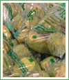

Tuotteet
Tuotevalikoimaamme kuuluvat Suomessa tuotettavat vihannekset, juurekset, perunat ja marjat.Kesäkaudella valikoimamme on runsaimmillaan ja kausi alkaakin kasvihuoneissa tuotetuilla varhaisvihanneksilla jo toukokuussa. Ensimmäisinä markkinoille pääsevät nippusipulit ja -porkkanat, salaatit sekä perunat. Kesän mittaan valikoima laajenee sisältäen mm. kaalikasvit, porkkanat, perunat, lantut, nauriit, punajuuret, sipulit, purjot, erilaiset salaatit, sellerit, avomaankurkut ja kesäkurpitsat.
Varastokaudella päätuotteitamme ovat porkkana, punajuuri, lanttu, keräkaali ja sipuli.
Tuotteittemme pakkauskoot vaihtelevat 300 g:n porkkanapussista 20 kg:n kaalisäkkiin. Tuotteet pakataan joko pestyinä ja multatuotteina asiakkaan toivomusten mukaan.
